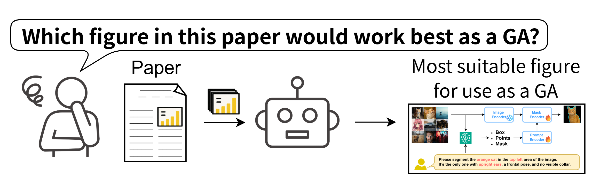
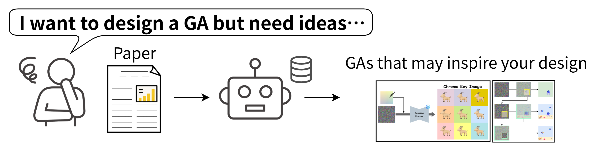
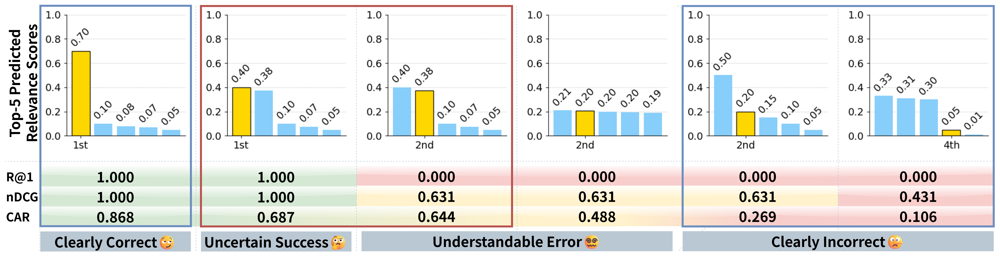

Abstract
Graphical Abstracts (GAs) play a crucial role in visually conveying the key findings of scientific papers. While recent research has increasingly incorporated visual materials such as Figure 1 as de facto GAs, their potential to enhance scientific communication remains largely unexplored. Moreover, designing effective GAs requires advanced visualization skills, creating a barrier to their widespread adoption. To tackle these challenges, we introduce SciGA-145k, a large-scale dataset comprising approximately 145,000 scientific papers and 1.14 million figures, explicitly designed for supporting GA selection and recommendation as well as facilitating research in automated GA generation. As a preliminary step toward GA design support, we define two tasks: 1) Intra-GA recommendation, which identifies figures within a given paper that are well-suited to serve as GAs, and 2) Inter-GA recommendation, which retrieves GAs from other papers to inspire the creation of new GAs. We provide reasonable baseline models for these tasks. Furthermore, we propose Confidence Adjusted top-1 ground truth Ratio (CAR), a novel recommendation metric that offers a fine-grained analysis of model behavior. CAR addresses limitations in traditional ranking-based metrics by considering cases where multiple figures within a paper, beyond the explicitly labeled GA, may also serve as GAs. By unifying these tasks and metrics, our SciGA-145k establishes a foundation for advancing visual scientific communication while contributing to the development of AI for Science.
🐐 SciGA Dataset: Sample GAs


Example GAs and their annotations in our SciGA-145k. Our dataset includes three types of GAs: Original (newly created), Reused (directly copied from paper figures), and Modified (combining/altering existing figures). The SciGA-145k uniquely offers full-text content with comprehensive figure support and explicit GA/teaser annotations, featuring elements designed to facilitate GA creation, recommendation, and future automated generation.
🔍 GA Recommendation Tasks
To support the design of GAs, we define two recommendation tasks in SciGA-145k:
- Intra-GA Recommendation: Identify the most suitable figure within a given paper to serve as a GA. This task enables automatic GA suggestion for research sharing platforms.
- Inter-GA Recommendation: Retrieve GAs from other papers to inspire the creation of a new GA for a given abstract. This encourages reuse of effective design patterns.


We benchmark several methods — including caption-aware retrieval using CLIP and Long-CLIP — showing that incorporating figure captions alongside visual features significantly boosts accuracy and consistency.
These tasks provide a foundation for developing tools that automate or assist GA creation, promoting broader adoption and better visual communication in academic publishing.
📐 Confidence-aware Metric for Recommendation Tasks: CAR

Illustration of CAR, our proposed recommendation metric. Each column shows predicted top-5 scores, with the GT highlighted in yellow. CAR assigns partial credit to understandable errors, similar to cases where the outcome is uncertain but still successful (red box), and evaluates clearly correct or incorrect predictions appropriately (blue box). Unlike R@k or nDCG, CAR assigns instance-level continuous scores without graded labels, based on the full score distribution, not just GT rank.
BibTeX
@inproceedings{kawada2026sciga,
title={SciGA: A Comprehensive Dataset for Designing Graphical Abstracts in Academic Papers},
author={Kawada, Takuro and Kitada, Shunsuke and Nemoto, Sota and Iyatomi, Hitoshi},
booktitle={Proceedings of the 2026 IEEE/CVF Conference on Computer Vision and Pattern Recognition - FINDINGS Track (CVPRF)},
year={2026}
}